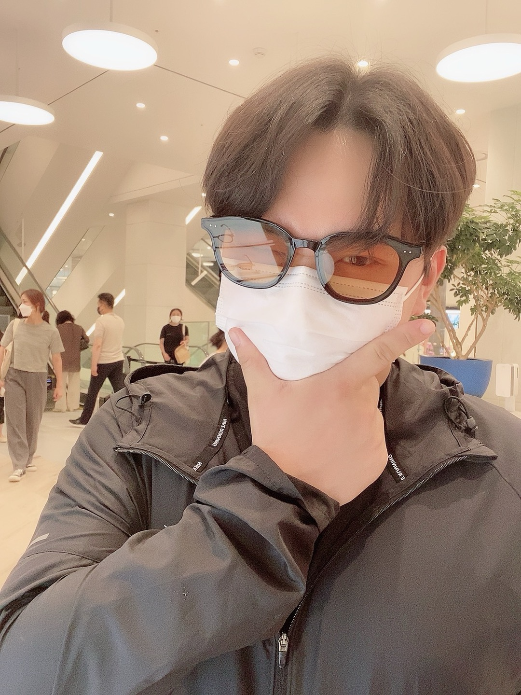

게임 개발 노트, 데이터 학습 기록, 커리어 로드맵을 모아두는 공간입니다.
연도별 자격증 계획, 프로젝트 목표, 이직 전략. 완료 항목을 직접 클릭해서 체크할 수 있어요.
사이드 프로젝트 개발 일지. 마일스톤별 진행 상황과 작업 체크리스트를 기록합니다.
언리얼 엔진, C++, 네트워크 프로그래밍 등 게임 개발 과정에서 배운 것들을 기록합니다.
빅분기, ADsP, ADP 자격증 공부 기록과 실무에서 배운 데이터 분석 내용을 정리합니다.